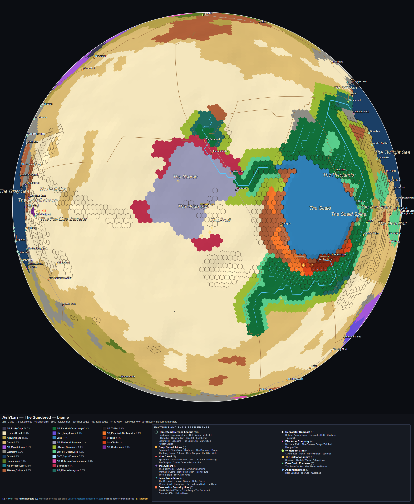
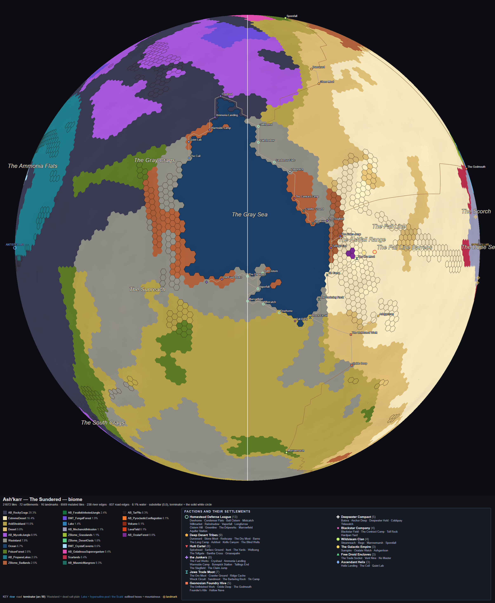
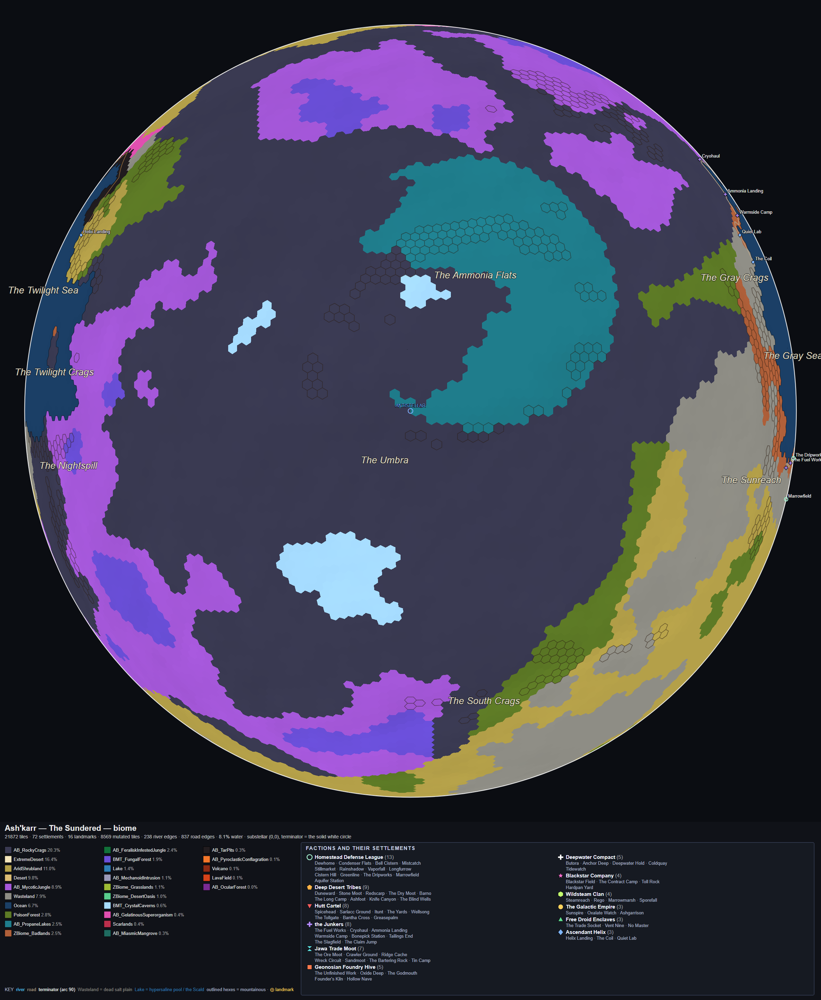
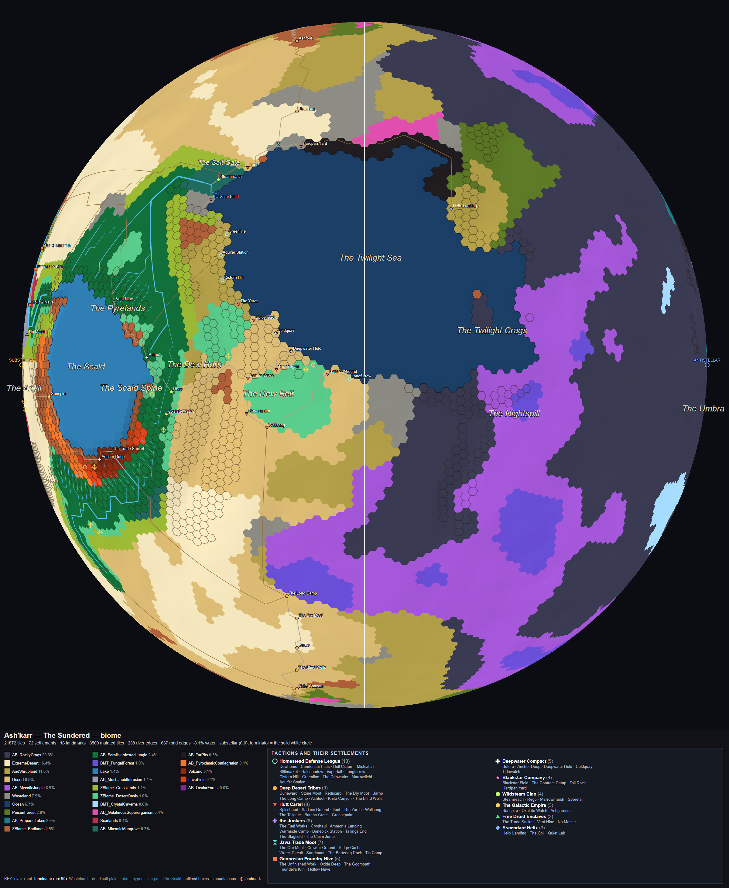
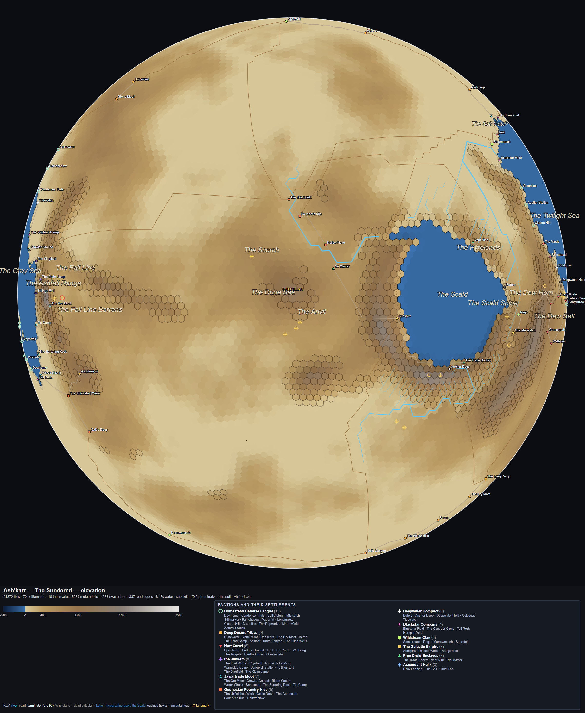
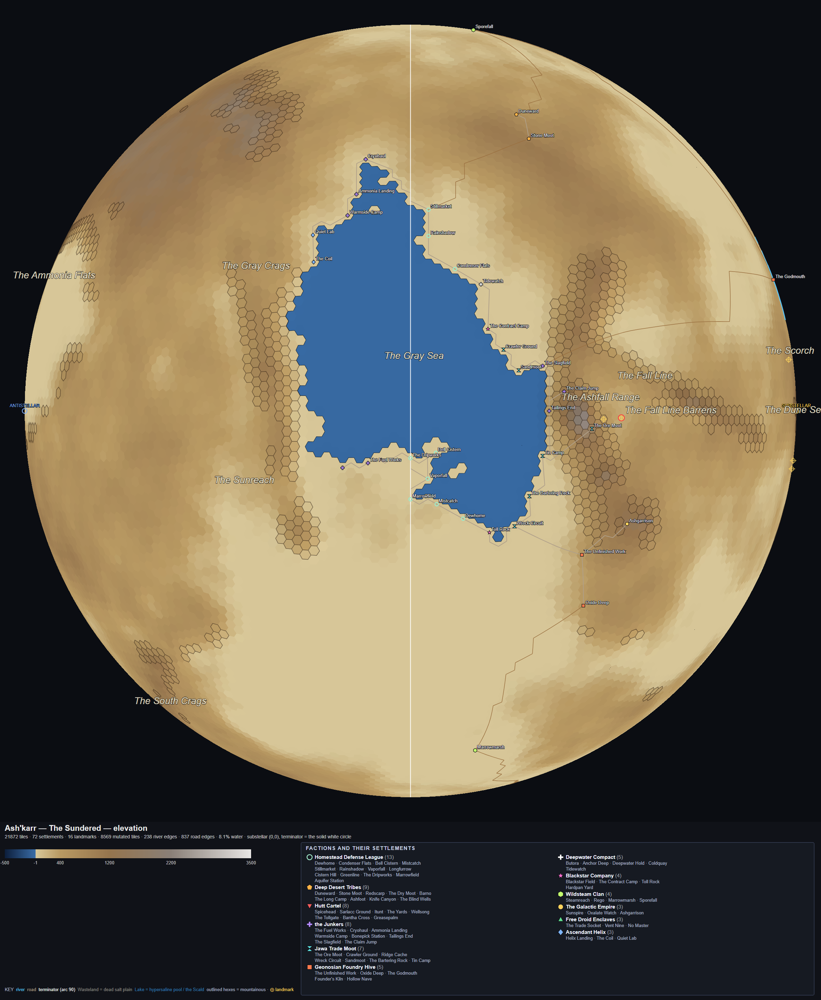
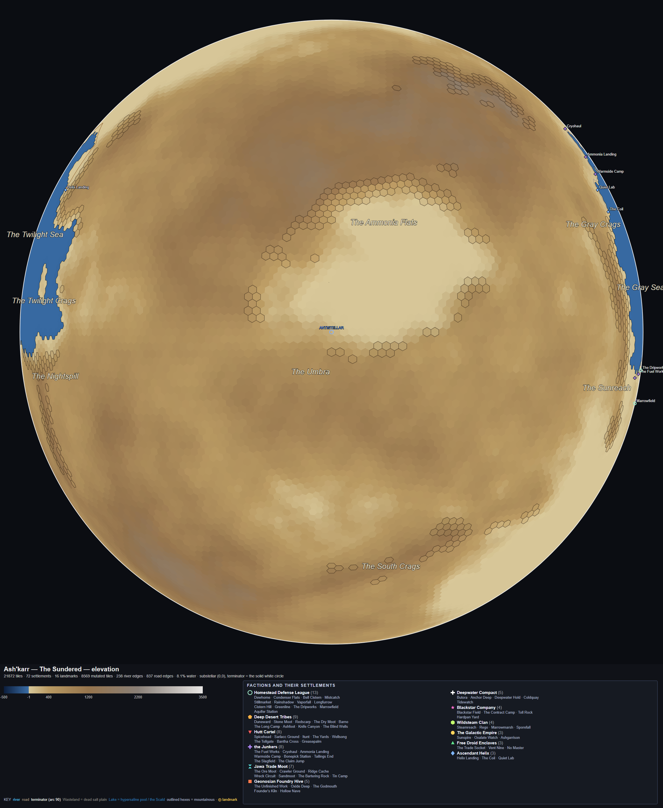
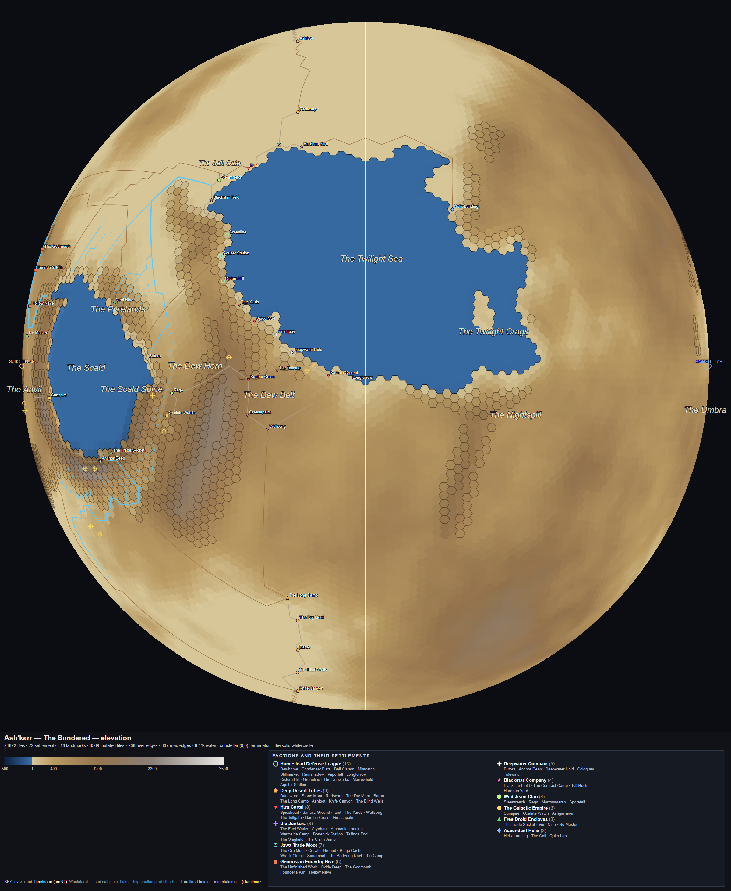

Rendered 2026-08-21 from world/ASHKARR_WORLDMAP_tiles.csv — 21,872 tiles, the
authored bundle as it stands tonight. The planet is tidally locked: the star sits over
0° longitude, so the four centres below are the star's face, the two opposed halves of the
terminator ring, and the permanent night side. The terminator is a great circle, and no single
globe can show it — the 90° and 270° views each carry one half of it down the middle of the
disc, and together they are the whole ring.
The map itself. Ordered as a rotation: dayside, trailing terminator, nightside, leading terminator.




The same four centres, showing relief. This is the layer that has actually moved since the 2026-08-20 sheet — the Scald was dropped 1,441 m, from a lake perched above its own shoreline down to −30 m, which also removed 32 false cliffs.




The two binding references, shown at the same width as the globes above.
The three globes from the original sheet, kept intact at
TRANSIENT_refmatch_globes.html. There was no 270° view; the terminator was only
ever half shown.


What changed between the two sets. Six commits touched
world/ASHKARR_WORLDMAP_tiles.csv after the 2026-08-20 renders:
a33dbbd and a672c8f and b3ce00a dried rainfall across the
deserts, badlands, volcano and jungle lowlands (invisible on a biome globe);
58eb6c6 moved three settlements off Impassable; bdb78ff put
AB_OcularForest onto three summits, which had been painted on zero tiles; and
bd5dad0 dropped the Scald to −30 m. Only the last two change what you see here,
and only bd5dad0 changes it much — on the elevation layer.
How to regenerate any of this. worldview.py reads the CSV bundle directly —
no savegame, no running game, about three seconds per globe. ⚠ The output filename does
not encode the centre, so consecutive runs overwrite each other; rename between runs.
The SVG beside each PNG is the one worth opening when a detail is in question. Every hex is hoverable for its tile id, biome, elevation, temperature and rainfall. They sit in the same folder and are not committed — they regenerate with the commands above.